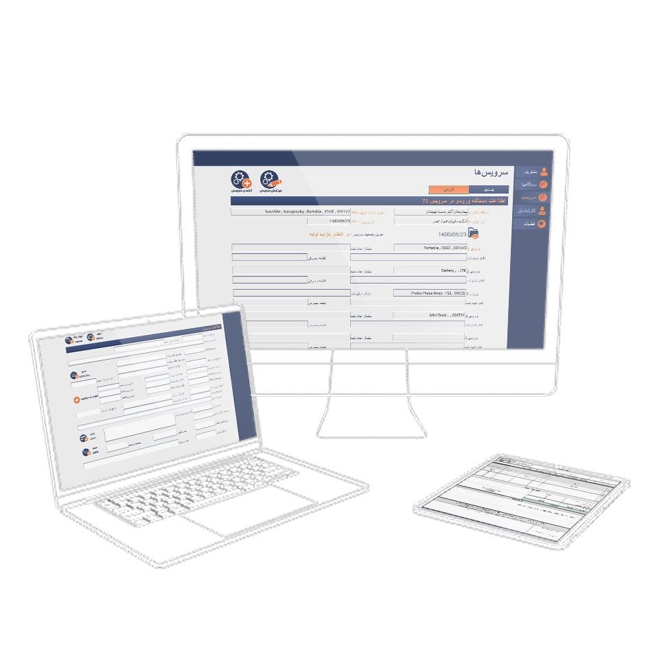

Farayand
Product & Service Design

Overview
This project involved designing the end-to-end service workflow for a medical device repair company, connecting technical operations, inventory, and accounting while optimizing touchpoints with customers and regulatory bodies, including communications, quoting, and service updates. As part of this service design, a SaaS streamlined device tracking from intake to dispatch, providing real-time insight into technician assignments, repair progress, and device histories to enhance workflow efficiency and staff and customer experience.
-
 Impact
Impact
The service design, supported by the Farayand Workflow Management System, streamlined both internal operations and customer-facing touchpoints, including communications, quoting, and service updates. The SaaS improved data entry speed by 70% and reduced critical errors by 25%, providing clear visibility into device progress, technician assignments, and inventory.
-
 Hats Worn
Hats Worn
- I led the end-to-end product/service design process, performed user research & market analysis & clustered data, mapped service blueprint, created user flow & wireframes, communicated design rationales, moderated usability testing and monitored user behavior while using the working prototype, designed style guide, UI kit, and high-fidelity mockups, and onboarded users.
-
 Tools
Tools
Adobe Tools(Ai, Ps) & Figma for Design - Jira for PM - VBA & Excel for Testing Prototype
-
 Timeline
Timeline
22 months, from Ideation to User Onboardign
-
 Team
Team
1 Product/Service Designer
1 Full-stack Developer
1 Developr/Product Manager -
 Platform
Platform
Responsive Web Application
Empathize
In this phase, I focused on gaining a deep understanding of the users and their workflow needs. The typical repair workflow involves multiple stages. Our common goal in this stage was to design a solution to handle all these steps with minimal friction, ensuring that data is organized and accessible in Persian, catering specifically to the needs of this niche market.
- Record customer complaint
- Update customer info
- Assign customer/device ID
- Log devices & accessories
- Print service worksheets
- Send receipt to customer
- Inspect device condition
- Save photos of received device
- Label all parts & accessories
- Enter diagnostic report
- Suggest preventative repairs
- Assign technologist
- Evaluate service cost
- Create & confirm quotes
- Order spare parts
- Monitor service process
- Monitor analytics
- Complete repairs
- Update service & device info
- Update repair status
- Record service notes
- Test repaired device
- Validate functionality
- Ensure safety & quality
- Approve for dispatch
- Prepare device for return
- Log all steps
- Issue invoice
- Schedule delivery
- Confirm customer receipt
User Research
For this project, I worked directly with real users, gathering insights through observation and feedback rather than fictional personas. To ground the design, I mapped all stakeholders involved in the service ecosystem, from hospital staff and regulators to service company roles and logistics partners.

For the purpose of this case study, I focus on three main players who shape the day-to-day workflow:
Biomedical Technologist
The technologists are the main power users of the system. Their responsibilities span the entire repair lifecycle, includign receiving, inspection, quoting, service, QC, and dispatch. In the interviews I identified these pain points:
- Difficulty accessing repair history quickly when a device arrives for service.
- Managing accessories separately from the main device, such as ultrasound probes, and ensuring they are correctly linked in the system.
- Local software solutions often come with extra features that are irrelevant to this niche industry, making the tools unnecessarily complex and reducing usability.
- Need for a system in Persian to support their workflow without language barriers
Technical Manager
The technical manager is responsible for overseeing the repair process from end to end. They plan services, assign technologists, and rely on data visualization and insights to monitor repair progress and team efficiency. The technical manager frustrations were as follows:
- Lack of real-time data visualization on device status, repair stages, and resource allocation.
- Difficulty in forecasting workload and identifying bottlenecks due to a lack of insight into performance metrics, such as average repair time and most common services.
- Lack of live reports on department profitability due to insufficient integration between service workflow software and financial systems.
- Need for a reliable reminder tool for order points to prevent low inventory and delayed services.
- The need to assign repair tasks to technologists based on their skill sets and availability, optimizing team efficiency.
Administrator
The administrator acts as the communication hub between technologists, customers, and management. Their duties include maintaining accurate data in the system, logging device intake and dispatch, and ensuring smooth workflow transitions:
- Keeping track of all devices, their repair status, and spare parts.
- Needing a simplified, intuitive interface that reduces data entry errors.
- Need for an automated document processing for receipts, labels, service worksheets, etc.
Service Blueprint
Here, I simplified the service blueprint, focusing on the end-to-end repair process without overwhelming detail on peripheral systems like accounting, inventory, or regulatory bodies. This blueprint served as the foundation for developing the Farayand Workflow Management System, clarifying user roles, touchpoints, and data flows to support a streamlined and error-free service.

Product Features
Label & Worksheet
On receiving a device, the system automatically generates a unique service worksheet and a label set, ensuring accurate tracking and reducing mix-ups throughout the repair process.
Inspection & Quoting
The system improves quoting by equipping the tech manager with tools to estimate service and spare parts costs immediately after inspection. This protects profit margins and reduces turnaround times.
Repair History Lookup
Every device and accessory is tied to a detailed repair history, enabling technologists to reference past issues, avoid repeated errors, and speed up diagnosis.
Inventory & Accounting
The workflow integrates with back-office systems to check spare part availability and issue invoices automatically after service completion. This bridged the gap between technical operations and business processes.
Manager's Analytics Dashboard
A dashboard offers insights into various service types, turnaround times, profit margins, workload distribution, and performance metrics, providing the tech manager with actionable intelligence for resource planning and process improvements. It allows the tech manager to assign tasks to specific technologists and monitor service progress. With these insights, the manager could allocate resources more effectively, identify bottlenecks, and forecast demand with far greater accuracy.
Service Improvements
As the prototype was tested in real workflows, several service improvements emerged as critical. These were not simply added functions, but thoughtful responses to real operational challenges users faced in their day-to-day work:
Automated Label Generation addressed the components mix-up, reducing errors by 25%
During early testing, it became clear that accessories and spare parts from different devices were occasionally misidentified or misplaced, particularly when multiple repairs were happening in parallel. To address this, I introduced automated label generation at the receiving stage. Each device and every detachable component was assigned a unique ID, with labels printed immediately upon intake.
In parallel, we redesigned the physical storage process, so that shelves and bins were also labeled with the corresponding device ID. These changes created end-to-end traceability from intake to dispatch. The outcome was a significant reduction in human error and smoother workflow efficiency, while giving technologists greater confidence in managing a high volume of devices simultaneously.
Preventative Repair Suggestions improved customer trust, and revenue opportunities
Through close observation of the inspection process, we realized that technologists often noticed early signs of potential failures that weren’t urgent enough to address immediately. Without a structured way to record and communicate these insights, customers would return with the same devices suffering more severe issues later.
To address this, we integrated a Preventative Repair Suggestions section within the inspection workflow. Technologists could now log components that did not yet require replacement but might cause problems in the near future. This helps customers stay on top of device health while creating new service opportunities.
Reflections
Lesson Learned
- Designing Beyond Features:
One lesson I learned was that true impact comes from improving both workflows and services, not just building software functions. By addressing issues like labeling and preventative repair suggestions, I realized how much value can be created when design decisions extend into the service layer and directly reduce everyday pain points.
If We Had More Time
- Expanding the Vision:
With additional time and resources, I would have expanded the manager’s dashboard into predictive insights and reporting tools, enabling smarter decision-making. I also saw opportunities to integrate with accounting and inventory systems, which would have completed the service loop and provided a more holistic experience for both internal staff and customers.
See More of My Work

Analytics Web-App Design

Mobile App Design

Ecommerce Design/Dev

UX/UI Case Study

UX Case Study